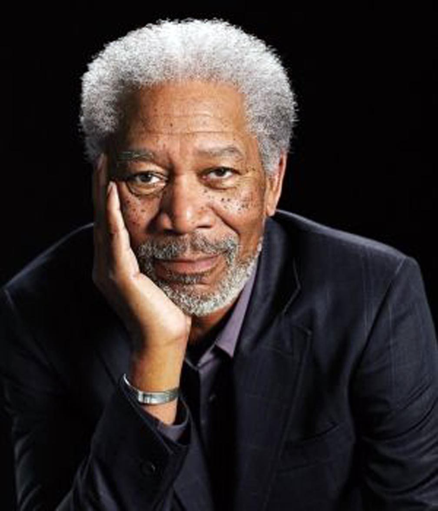

Morgan Freeman

Morgan Freeman reconoce que su carrera recibió un impulso al ser nominado al Óscar5 y al Globo de Oro, por Street Smart (El reportero de la calle 42), donde compartió protagonismo con Christopher Reeve.
|
Morgan Freeman nació en Memphis, Tennessee, hijo de Mayme Edna Revere y Morgan Porterfield Freeman. Pasó la mayor parte de su infancia con su abuela en Charleston, Misisipi, y después se mudó con su familia a Greenwood, Misisipi, a Gary, Indiana, y, por último, a Chicago, Illinois. Durante su estancia en Charleston y Greenwood, Freeman asistió a la Escuela primaria Threadgill, donde representó su primera obra teatral. A los 12 años ganó un concurso y actuó en un programa de radio en Nashville, Tennessee. En 1955, se graduó en la Escuela secundaria Broad Street, en Chicago, y poco después rechazó una beca parcial para la Universidad Estatal de Jackson, Mississippi, optando en su lugar por trabajar como mecánico para la Fuerza Aérea del Ejército de los Estados Unidos.
La noche del 3 de agosto de 2008 Freeman sufrió un accidente automovilístico en el estado de Misisipi y fue ingresado en un hospital de la ciudad de Memphis con pronóstico grave.3Recibió el alta hospitalaria seis días después, tras haber pasado por el quirófano, donde tuvo que ser operado -por las fracturas que sufrió- e intervenido para reconectar los nervios y los tejidos del brazo y la mano heridos en el percance. Según medios locales, la causa fue que el actor se quedó dormido al volante.4